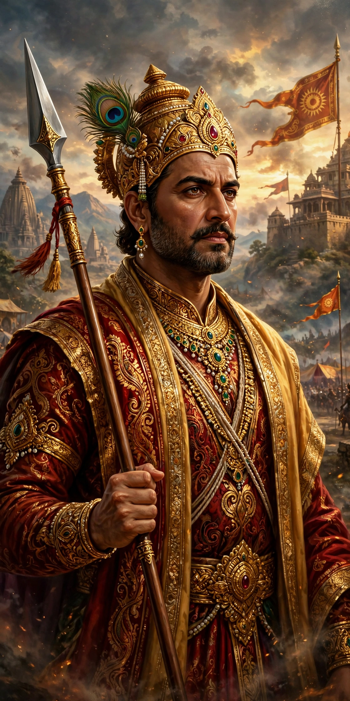

Yudhishthira
Yudhishthira (Sanskrit: युधिष्ठिर, IAST: Yudhiṣṭhira) is a major figure in the Hindu epic Mahabharata. He is the eldest of the five Pandava brothers and is renowned for his steadfast adherence to dharma (righteousness) and truth. As the son of the god Dharma (also identified with Yama) and Queen Kunti, Yudhishthira is often called Dharmaraja, "king of dharma." After the Kurukshetra War, he was crowned emperor of Hastinapura and ruled for 36 years before renouncing the throne and undertaking the mahaprasthana, the great journey to heaven.

| Yudhishthira | |
|---|---|
| Affiliation | Pandava, Kuru dynasty |
| Abode | Hastinapura, Indraprastha |
| Weapon | Spear |
| Parents | Dharma (spiritual father), Pandu (father), Kunti (mother) |
| Siblings | Bhima, Arjuna, Nakula, Sahadeva; Karna (half-brother) |
| Spouse | Draupadi, Devika |
| Children | Prativindhya (by Draupadi), Yaudheya (by Devika) |
Birth and early life
Yudhishthira was born to Kunti through her invocation of the god Dharma, using a boon granted by the sage Durvasa that allowed her to summon any deity. He was raised in Hastinapura along with his brothers and their cousins, the Kauravas, under the tutelage of Drona. From childhood he was distinguished by his calm temperament, scholarship, and devotion to truth.
The game of dice
Invited by his uncle Dhritarashtra to a game of dice at Hastinapura, Yudhishthira gambled against the skilled Shakuni and progressively lost his kingdom, his brothers, himself, and finally his wife Draupadi, whose humiliation in the Kaurava court became one of the central grievances leading to war. In consequence of two dice games, the Pandavas were exiled for thirteen years, the last of which was to be spent incognito.
Kurukshetra War and reign
When diplomacy failed, Yudhishthira led the Pandava cause in the eighteen-day Kurukshetra War. Though reluctant to fight his elders and teachers, he was counselled by Krishna. After the victory he performed the ashvamedha (horse sacrifice) and ruled from Hastinapura. Tormented by guilt over the slaughter, he was instructed by the dying Bhishma in the duties of kingship, discourses preserved in the Shanti Parva.
Final journey
At the end of his reign, Yudhishthira crowned Parikshit and set out with his brothers and Draupadi toward Mount Meru. One by one his companions fell along the way; Yudhishthira alone, accompanied by a dog — who was revealed to be his father Dharma in disguise — reached heaven in his mortal body, having refused to enter without the faithful animal.
Character
Yudhishthira embodies the tensions of dharma: his truthfulness is legendary — he is said never to have lied, with the ambiguous half-truth about "Ashvatthama is dead" during the war standing as the famous exception that caused his chariot, which had floated above the ground, to descend to earth.